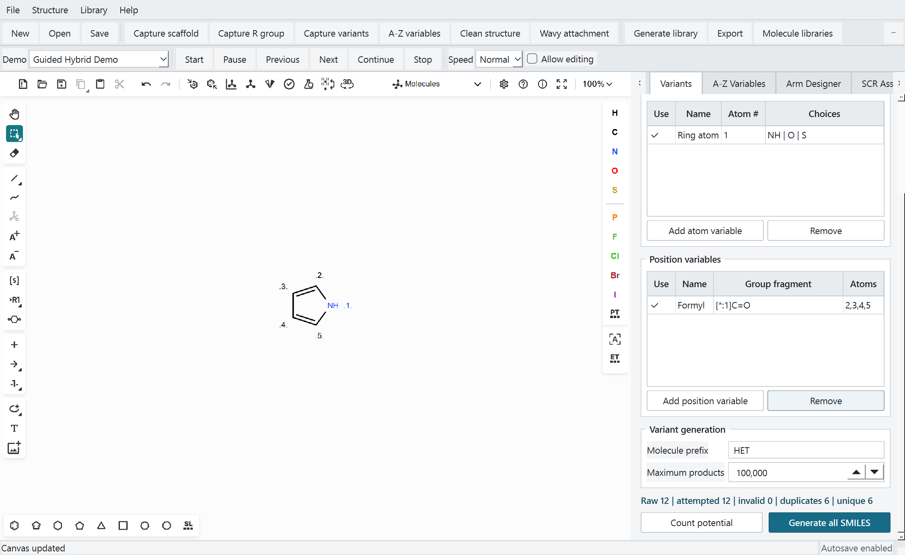

Draw and define
Use the integrated Ketcher editor with numbered R sites, A-Z variables, cores, fragments, and saved arm designs.
 VARYL
VARYL

Version 1.0.0 for Windows
Chem Library Builder
Design reusable chemical fragments, enumerate molecular libraries, validate structures, and export canonical SMILES from one desktop workspace.
Download VARYL 1.064-bit Windows. Python and RDKit are included. Published by Pentose LLC. Verify checksum.
Use the integrated Ketcher editor with numbered R sites, A-Z variables, cores, fragments, and saved arm designs.
Generate positional and substituent combinations with RDKit validation, canonical SMILES, and duplicate removal.
Keep reusable structures in permanent SQLite libraries with stable identifiers, lineage, pagination, and backups.
Preview complete structures and export Excel, CSV, SDF, or grouped CDXML files with calculated properties.
Windows 10 or 11, 64-bit processor, 8 GB memory recommended, and sufficient storage for generated libraries.
Projects, molecule databases, recovery snapshots, and backups are stored in your Documents folder and are not deleted during upgrades or uninstall.
Version 1.0
VARYL validates and deduplicates generated structures, while keeping the chemist in control. Review generated chemistry before scientific use and include a shared-session snapshot when reporting reproducible issues.